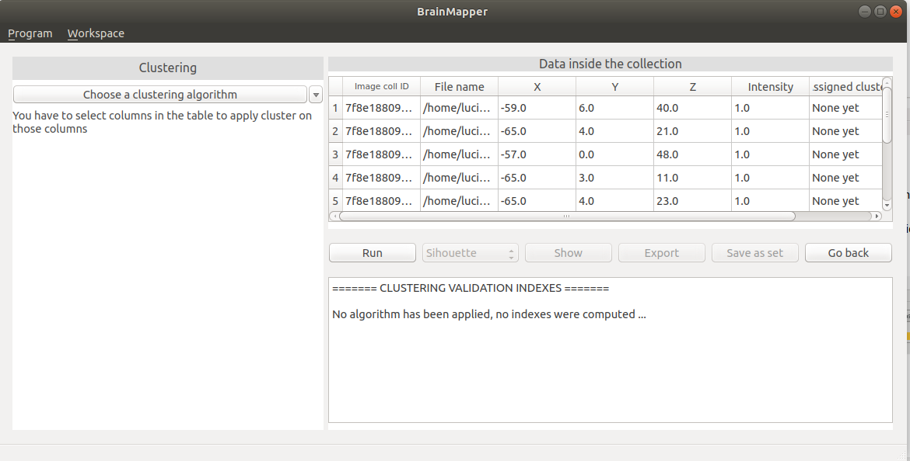

USER MANUAL
Welcome to the user manual for the BrainMapper software.
Welcome to the user manual for the BrainMapper software.
Contents - Clustering
Go back to home page
BrainMapper allows the user to use the interesting data from NIfTI files to perform clustering algorithms and thus determine the different groups of voxels.
To accomplish this, BrainMapper extracts the data from NIfTI files or from CSV files and allows you to select the clustering method you would like to apply. Clustering results can be exported as a CSV file or
saved in the application as a set.
In this section we explain the main functionalities of our software around clustering.
The NIfTI format is an image format but for some teams it is interesting to apply clustering algorithms on the list of voxels, usually represented as a list of
[X_coordinate,Y_coordinate,Z_coordinate, Intensity] entries, each of which represent a voxel.
Our software extracts the data of your selected image collections before applying clustering algorithms on it.
From the main view page, where all collections are accessible, the user can click on 'Clustering' button at the bottom right, once he has selected some image collections.
A pop up dialog window will appear. It shows the number of image collections selected as well as the total number of NIfTI images to be treated.
In this windows, the user can select between two ways of extracting the image's information before the clustering view is loaded : our software creates a
list of interesting voxels by extracting the coordinates of all the voxels that have an intensity greater than 0 or by calculating the image's centroid
(each image will be represented by a single point).
When all points are selected by choosing 'Use all region points for each file', the data used for clustering is the list of all voxels whose intensity is greater than 0.
The clustering view thus contains a data table with several data entries
By choosing 'Use centroids as file representation', the data used for clustering is the a list of a single voxel per file, which represents the mean voxel or center
of all the voxels in the image. This type of extraction might take a while longer than the simple extraction, because several calculations are done.
The clustering view thus contains a data table with a single data entries per selected file : if a total of 4 files in 2 different image collections were selected, the data table
will display 4 data entries

Once you have extracted the data from the selected images, you can choose on which coordinates you want to apply a clustering algorithm. To be done, you have to select the columns on which you want work.
On this following example, we have selected the coordinates X and Y.
Then, you can choose which clustering algorithm to apply by clicking on "Choose a clustering algorithm" at the top left in the clustering view.

If you need more information about the parameters, you can click on the "?" button.
A new window will appear to give more information about the parameter you have selected.
The KMeans algorithm is a classic clustering algorithm.
The aim is to group objects into groups centered on centroids.The objects are created using attributes.
For this algorithm, it is necessary to choose the number of groups, the function of distance between two objects and the stopping condition. This algorithm has the advantage of being fast. However, the results depend on the initialization.
We used the implementation from the scikit-learn library.
For more details on the algorithm and its parameters click here
The KMedoids algorithm is an alternative to KMeans.
The aim is to group objects into groups centered on medoids.
For this algorithm, it is necessary to choose the number of groups, the function of distance between two objects and the stopping condition.
This algorithm has the advantage of being fast. However, the results depend on the initialization.
A configuration has a cost that is defined as the sum of distance between each point et the medoid of the group.
At each iteration, we calculate if an another configuration (with another medoid) has a lower cost.
The Kmedoid algorithm is more resistant to noise than the Kmeans algorithm.
But the number of calculations can be high if the number of points is high.
Agglomerative clustering is hierarchical clustering algorithm.
At initialization, each object is in group composed only of itself.
The algorithm iterates until a stopping condition is met (for example, the number of groups).
At each iteration, the algorithm merges the two most similar groups.
The important parameter are the stopping condition and how to calculate the similarity between two groups.
Three similarity mesures are often used :

This algorithm needs two inputs :
The principle is similar to that Kmeans.
The difference is the value of belonging to a group that is not a binary value but a value between 0 and 1.
The points can belong to several groups, which allows for more tailored results for groups with unclear boundaries.
We used the implementation of this type of algorithm from the scikit-fuzzy library.
For more details on its parameters click here

Once the selected clustering method parameters have been correctly set, you can launch the algorithm by clicking on the 'Run' button.
Cluster assignments will appear on the data table. Then, you could show graphics you want.
The final number of clusters can be inferior to the number of clusters chosen. That means that the algorithm has stopped before the end.
The data table will be modified to display which data entry belongs to which cluster.
After launching a clustering algorithm, you have results in the result panel. In this panel, you have a reminder of the chosen parameters such as the value of max_iter, the score chosen, the number of clusters (n_clusters), the value of i_iter, the type of initialization and the coordinates selected. You also have the value of cluster centroids and the value of scores (Davies-Bouldin score, Calinski-Harabasz score and the mean silhouette).
This assignment results can be saved in two ways : either by saving them as a new set in the application or by exporting the results as a CSV file.
By clicking on the "Save as set" button, a NIfTI file containing all points from a given cluster will be recreated, for each cluster obtained.
A set containing this results will be added in the main page, in the "Clustering" tab.
By clicking on the "Export" button, a CSV file containing the data table can be saved on the disk.
Internal validation indexes can be useful when one needs to determine which clustering execution is to be retained as conclusive or which number of clusters is the most conclusive.
In this version of BrainMapper, validation indexes are calculated automatically after a clustering algorithm is applied on data.
The internal validation indexes of the current version are :
The aim of this method is to calculate for each point the similarity between him and his group by relation to the similarity between him and the other groups. Those data are displayed on a graph, sorting them by group and value. The closer the shape of each group is to a rectangle, the more the grouping represents the data. The silhouette value is between -1 and 1. The silhouette is correct if it respects the following criteria:
Mean silhouette index is calculated with the according function from scikit-learn library. For more details click here.
The Calinski-Harabasz index is based on the comparison of the sum of squares between clusters relative to the sum of the squares within a cluster.
The aim is to maximize the measurement of cluster separation and minimize proximity measurement of points in a cluster.
The index of Calinski-Harabasz is defined as follows :
$$ {CH =\frac{N-K}{K-1} * \frac{SS_B}{SS_W} } $$
with K the number of clusters, N the number of points, SSB the variance within a group and SSW between groups.
The higher the Calinski-Harabasz index, the better the number of groups.
Calinski-Habaraz score is computed with the according function from scikit-learn library. For more details click here.
Davies Bouldin index compares intra-cluster distances with inter-cluster distances.
The principle is to have low inter-cluster distances and distances high inter-clusters. The Davies-Bouldin index is defined as follows:
$$ {DB =\frac{1}{K} \sum^K_{k=1}max \frac{I(c_i)+I(c_j)}{I(c_i,c_j)} } $$
with I(ci) the average of the distances between the objects of the group Ci and its center,
I(ci, cj) the distance between the centers of groups Ci and Cj and K the number of clusters
The lower the Davies Bouldin index, the better the number of groups.
Davies Bouldin index score is computed with the according function from scikit-learn library. For more details click here.
The Fuzzy Partition Coefficient (FPC) tells us how cleanly our data is described by the algorithm with the number of clusters chosen. This metric is defined between 0 and 1, with 1 being the best.
FPC is a value returned by the Fuzzy CMeans algorithm from scikit-fuzzy library. For more details click here.
This metric can only be used with the Fuzzy CMeans algorithm.
After launching a clustering algorithm, you can show different graphics.
To show a graphic, you have to choose the graphic you want in the combo-box. Then, you have to select the button "Show".
In this part, we describe all available graphics.
If you select in the combo-box "Silhouette", you have the silhouette graphic.
For all clustering algorithms, you can show the silhouette graphic. This one reprents the mean silhouette.
For more detail about the mean silhouette, click here.
If you select in the combo-box "3D view", you have a representation of clusters in 3D.
Each cluster is represented by a different color and a different form. The centroid in each cluster is bigger than other points.
In the following example, three clusters are represented in 3D.
This graphic is available for all clustering algorithms but for the Fuzzy CMeans algorithm, the color of points is the mix of clusters colors in terms of affiliations of those points to the different clusters.
This following example shows the 3D view for the Fuzzy CMeans algorithm.
If you select in the combo-box "Cross sections", you have a representation of clusters in 2D.
Each point is represented in 2D on a brain cross section. Each cluster has a different color.
For all clustering algorithms, you can show the silhouette graphic.
If you select in the combo-box "Glass brain", you have a representation of clusters in 2D on a glass brain cross section.
Each point is represented in 2D on a brain cross section. Each cluster has a different color. Contrary to the cross section graphic, with the glass brain, you can see more points on the brain.
For all clustering algorithms, you can show the silhouette graphic.
The dendrogram helps in choosing the number of clusters. The higher is the division, the greater is the distance between the groups.
On the following example, we could decide to create two or three clusters.

In the following example, you decided to make only two clusters (one in pink, one in purple).
The dendrogram is only available for the agglomerative clustering.
BrainMapper can suggest a number of clusters for all clustering algorithms.
To do, you have to mention an interval for the parameter n_clusters and to choose a score. Then, you have to select the buttoon "Run". And for this score, the algorithm returns the best value of clusters.
In the following example, you have chosen the interval "3-6" for n_clusters and the Calinski-Harabasz score.
The result appers in the result panel.
In the following example, the result is next to "n_selected". For this data, with the interval "3-6" for n_clusters and the Calinski Harabasz score, the best value for number of clusters is 4.
If we had chosen an other score, the result would have been different.
We have redone the test changing only the score. With Davies Bouldin score, the best value is 3.

With BrainMapper, you can launch a clustering algorithm several times.
To do, you have to mention a value in i_iter. Then, you have to select the buttoon "Run".
In the following example, we choose 3 for the value of i_iter and launch the algorithm. In this case, the Fuzzy CMeans algorithm will be launched thre times for each value of clusters (3 to 6) with Davies-Boulin score.
In the result panel, we have the result of launching the Fuzzy CMeans algorithm three times. The yellow line shows the best result. And the blue line shows the result which is displayed in the part "Data inside the collection". If you select a column header ("I_number", "Clusters", "Mean silhouette", "Calinski-Harabasz", "Davies-Boulin" or "Fuzzy partition coefficient"), the rows will be ordered on their values in this column.